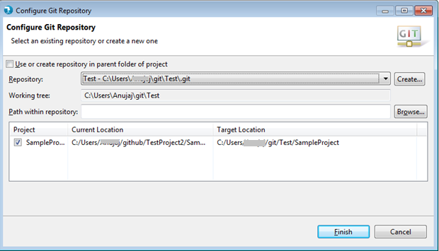
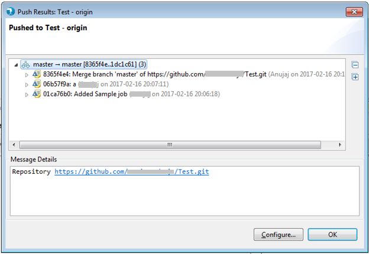

How to check in New ELT Project into Git Repository
Whenever a new ELT project needs to be checked in the Git Repository, the target Git repository needs to be cloned on your machine. Refer steps 1 through 6 from this page for cloning Git Repository.
1) Right click on the ELT project in Project Explorer > Team > Share Project
2) It will take to Configure Git Repository window. Select desired Git Repository from drop-down and click Finish.

3) Go to Project Explorer, Right click on the project > Team > Commit

Note: There may be few empty folders in your ELT project. By default, those folders will not be pushed to upstream repository. If you want to keep those folders in upstream Git repository, create a .gitigonre file with following 4-line content:
# Ignore everything in this directory
*
# Except this file
!.gitignore
However, once you add something to these empty folders, you would need to remove or update the .gitignore file accordingly.
Similarly, if you want to not check in certain files/folders and also, want to avoid them showing up in commit window, create a .gitignore and list such files/folders in it. For example, a .gitignore file with below content will exclude folders bin, target and files .settings, .classpath from checking in:
/target
/bin
/.settings
/.classpath
5) Enter commit message and drag files from unstaged changes into staged changes then click Commit.


6) Go to Project Explorer, right click on the project > Team > Push to upstream

It should show following confirmation screen:
